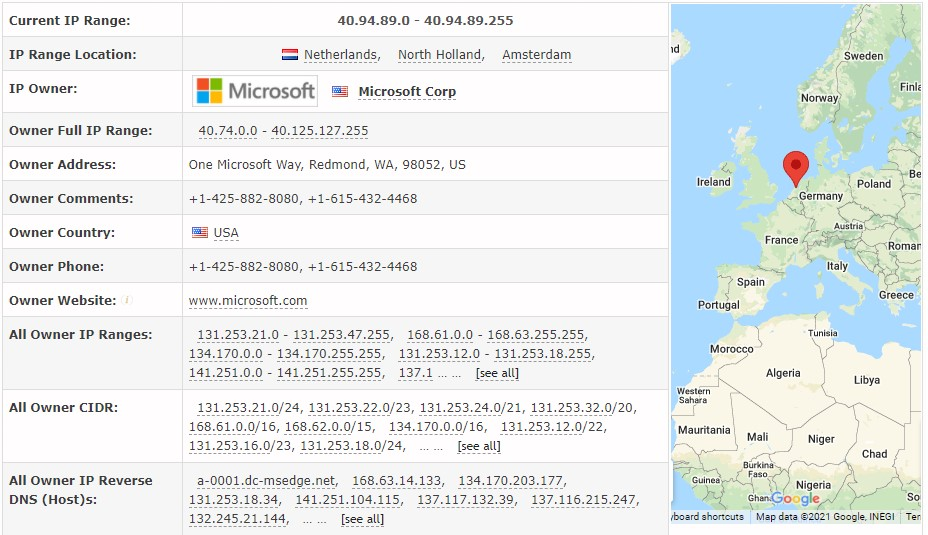

Here is a detective story about some data science forensics, and there is a villain too.
Background
As a partner at a market research firm, I get involved in quite a lot of surveys. Some of them (such as the voice of customer surveys/customer satisfaction) include sending a personal email invitation with “an invite link”.
Lately, we’ve started noticing a weird phenomenon: a lot of the links are opened (the email invitation link is clicked) but left unanswered. Also, we see a lot of cases where expect responses from a specific location but see that originate all over Europe.
We started asking ourselves, are we witnessing the abuse of our surveys?
Validating Respondents
One of my team members noticed some irregularities during our routine QA validations: responses were originating from unexpected remote locations all over Europe. A lot of duplicated IPs, as if a lot of people were suddenly using a VPN or something like that. Using a whois service I understood that the links are being opened by Microsoft-owned IPs.

My first thought was that they started using some bot that examines the survey link within the email. Why exactly? at that point, I hypothesized it was some kind of caching going on, probably for speed improvements (but that’s not the deal).
Since no false information was being entered in these “partial surveys”, no actual harm was done by this bot. Except that it’s not entirely accurate, you see - in some surveys, the practice is to embed the first question of the survey within the invitation email. That way the first click of the recipient includes the answer to the first question, e.g., a “Net Promoters Score” (NPS) or general satisfaction question. It helps with response rates, but unfortunately, the bot started clicking the links randomly and entering garbage data.
A bot with random thoughts
Trying to analyze when the problem started affecting my clients, I created a chart similar to the following, which compares partial answers (which are affected by the bot) versus complete answers (the bot doesn’t complete the survey entirely, so complete answers are real people). I’ve added an illustration (I’m not using real data here so as not to expose actual client’s data).
library(tidyverse)
responses <- read_csv("example_data.csv") %>%
mutate(response_time = factor(response_time, c("Before 2021-06-01", "After 2021-06-01")))
ggplot(responses, aes(x = type, fill = factor(rating))) +
geom_bar(position = "fill") +
facet_wrap(~response_time) +
scale_fill_brewer(palette = "RdYlGn") +
guides(fill = guide_legend("Rating")) +
theme_bw() +
scale_y_continuous(labels = scales::percent) +
ylab("Respondents [%]") +
xlab("") +
ggtitle("Distribution of complete vs. partial responses,\nbefore/after June 21")

See how the distribution of partial data after June 21’ is completely different from the distribution of the complete surveys and the partial surveys before June 21’?
Another thing we noticed was that a lot of the partial surveys were being answered within 2-3 minutes (another strong indication for the work of Microsoft’s bot).
So what actually went on?
Microsoft has a feature called “Safe Links”, what this feature does is rewrite links, but in the process, it also visited some of the links in the email (or so I understand). It is supposed to prevent users from entering malicious websites through phishing emails (by scanning the links in every email which lands in the recipients’ inbox). In the process, it also screwed up our data collection.
Once I figured that out, the road to putting a javascript that will discern real people from bots was not too long. We started implementing the javascript code in our surveys, but fortunately, I think that there was some change in the method this bot is employed, since we saw no bot entries during August.
Conclusion
By the time we figure the problem and implemented a fix, the problem was already miraculously solved by someone else (maybe by Microsoft, the survey software company we are using, or someone else in the process). However, it was intriguing to try and figure out what’s going on, using data analysis as a forensics tool.